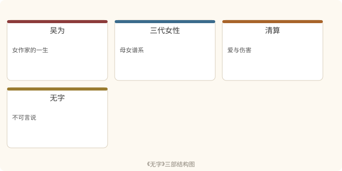

无字
一、基本信息
| 作者 | 张洁 |
|---|---|
| 成书/出版 | 第六届茅盾文学奖获奖作品（中国作家网官方名单 C012；新华网 C024：第六届茅盾文学奖、第六届国家图书奖、第二届老舍文学奖） 北京作协悼念张洁：爱，是不能忘记的（新华网）（官方媒体） |
| 国别/地区 | 中国 |
| 时代 | 现当代 · 当代 |
| 体裁 | 长篇小说 |
| 语言 | 汉语（白话） |

《无字》三部结构图（主题·结构图）
二、创作背景
新华网（C024）：张洁为'唯一两度获茅盾文学奖的作家'——《沉重的翅膀》（第二届）、《无字》（第六届）。
题材：三部曲式的女性生命史与情感清算（通说待核）。
三、内容脉络
三部曲：以女作家吴为的一生回望三代女性（通说待核）。
爱情、婚姻与创伤的自我审判（通说待核）。
四、主要人物表
| 人物 | 身份 | 说明 |
|---|---|---|
| 吴为 | 女作家 | 叙述主体（通说待核） |
| 叶家三代 | 女性谱系 | 母女传承（通说待核） |
五、主题与艺术特点
- '爱是不能忘记的'之反题：爱的清算（通说）。
- 女性书写的极限强度（通说）。
- 自传性的代价（通说待核）。
六、影响与评论
- 新华网：'唯一两度获茅盾文学奖的作家'，《无字》获第六届茅盾文学奖、第六届国家图书奖、第二届老舍文学奖（C024）。
北京作协悼念张洁：爱，是不能忘记的（新华网）（官方媒体） - 中国作家网官方名单：第六届茅盾文学奖获奖作品（C012）。
历届茅盾文学奖获奖作品一览（中国作家网）（官方文学机构）
七、阅读建议
难点
- 三部曲体量与自传性情绪。
- 时代运动的背景注释。
- 《无字》（北京十月文艺出版社，通说待核）。
先读《爱，是不能忘记的》短篇定调 → 三部曲。
八、待核实
- 吴为人名与三部卷名核对。
- 2002年获奖与初版年份（1999—2002）核对。
- 晚年绘画创作待核。
本页主要来源
张洁的其他收录作品：无字